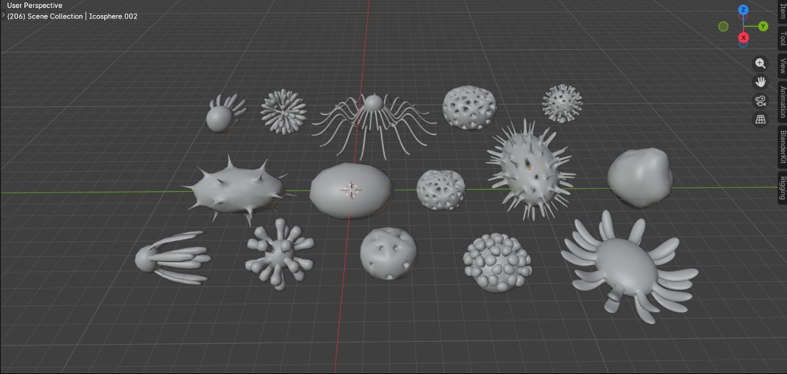
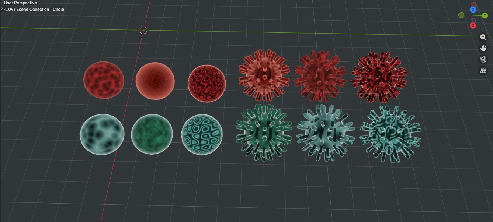
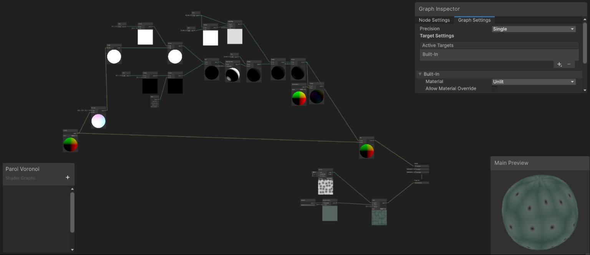
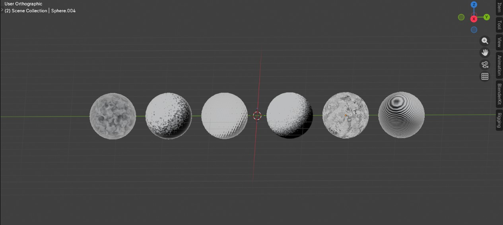

Info
3 personne | temps : 3 mois | outils : Unity, C#, Blender
Contexte
Projet de type "toy" réalisé en équipe, dans le cadre des études.
Objectif
Concevoir un toy en groupe, pensé comme un système de jeu expérimental plutôt qu'un jeu complet.
Intro
Après plusieurs tentatives en équipe, nous avons trouvé un prototype à la fois réalisable dans le temps imparti et suffisamment solide pour être développé jusqu'au bout.
Processus
Nous avons réalisé un jeu de capture de points basé sur des cellules neutres, qui peuvent devenir saines ou infectées. Le joueur convertit les cellules pour les assainir, en les faisant apparaître depuis un vaisseau mère qui sert de spawner. En face, les messagères convertissent les cellules pour les infecter, depuis un vaisseau mère virulent qui joue le même rôle.
Chaque état de cellule déclenche une réaction défensive différente : les cellules infectées font apparaître des cellules chasseuses qui attaquent le joueur, tandis que les cellules saines font apparaître des cellules gardiennes qui attaquent les messagères.
Au sein de l'équipe, ma contribution a porté principalement sur le style graphique et sur la base de programmation du personnage. Je n'étais pas seul sur la partie code, mais je me suis concentré sur les ennemis et leur comportement, via un système de state machines. J'ai également utilisé le Shader Graph d'Unity pour réaliser plusieurs effets visuels, sans être le seul sur cette partie du travail c'est le pan sur lequel je me suis principalement investi.




Apprentissage
Ce projet m'a permis de prendre en main le Shader Graph d'Unity, et surtout d'apprendre à combiner programmation et direction artistique dans un même travail plutôt que de les traiter comme deux tâches séparées. Travailler à plusieurs sur les mêmes systèmes (ennemis, style visuel) m'a aussi appris à délimiter clairement ma zone de contribution au sein d'un développement collectif, pour avancer efficacement sans se marcher dessus.